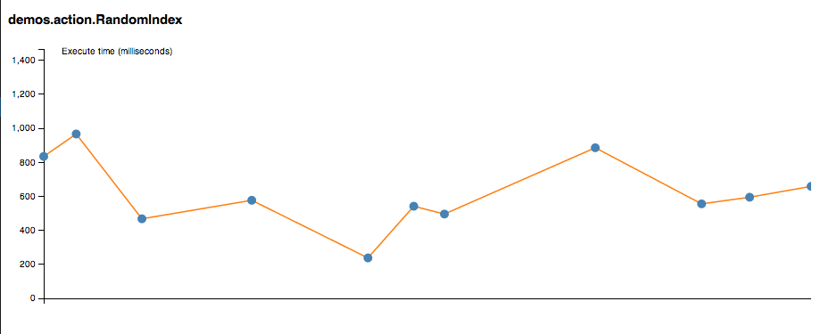

매트릭스¶
Xitrum은 어플리케이션의 JVM의 힙 메모리, CPU, 액션의 수행 상태를 Akka 클러스터의 각 노드로부터 수집합니다. 또한, 이 데이터들은 JSON 데이터로 전달됩니다. Xitrum은 매트릭스의 정의도 가능합니다.
매트릭스의 구성은 Coda Hale Metrics 라이브러리를 바탕으로 작성되었습니다.
매트릭스 수집¶


액션 매트릭스¶
Xitrum은 각 노드에서의 액션의 실행상태를 Histogram 을 통해 측정합니다. 여기에서 액션의 실행 횟수와 비동기 액션의 수행시간을 알 수 있습니다.

최근의 특정 액션의 실행 시간:
수정된 매트릭스 수집¶
위에 정의된 기본적인 매트릭스 수집방법에 추가로 매트릭스를 수정하여 수집할 수 있습니다.
xitrum.Metrics 은 gauge, counter, meter, timer , histogram 에 관한 정보의 단축키 입니다.
Coda Hale Metrics 와 its Scala implementation 를 통해 사용법을 익힐 수 있습니다.
Timer 예제:
import xitrum.{Action, Metrics}
import xitrum.annotation.GET
object MyAction {
lazy val myTimer = Metrics.timer("myTimer")
}
@GET("my/action")
class MyAction extends Action {
import MyAction._
def execute() {
myTimer.time {
// Something that you want to measure execution time
...
}
...
}
}
매트릭스 배포¶
Xitrum은 일정 주기로 최근의 매트릭스 값을 JSON 포멧으로 제공합니다. 데이터는 휘발성이며 영구적으로 저장되지 않습니다.
힙 메모:
{
"TYPE" : "heapMemory",
"SYSTEM" : akka.actor.Address.system,
"HOST" : akka.actor.Address.host,
"PORT" : akka.actor.Address.port,
"HASH" : akka.actor.Address.hashCode,
"TIMESTAMP" : akka.cluster.NodeMetrics.timestamp,
"USED" : Number as byte,
"COMMITTED" : Number as byte,
"MAX" : Number as byte
}
CPU:
{
"TYPE" : "cpu",
"SYSTEM" : akka.actor.Address.system,
"HOST" : akka.actor.Address.host,
"PORT" : akka.actor.Address.port,
"HASH" : akka.actor.Address.hashCode,
"TIMESTAMP" : akka.cluster.NodeMetrics.timestamp
"SYSTEMLOADAVERAGE" : Number,
"CPUCOMBINED" : Number,
"PROCESSORS" : Number
}
매트릭스 레지스트리는 metrics-json 에 의해 파싱됩니다.
Xitrum 기본 뷰어¶
Xitrum은 기본 매트릭스 뷰어로 /xitrum/metrics/viewer?api_key=<xitrum.conf 파일 안의 키> 을 제공합니다.
이 URL은 위의 정보를 D3.js 로 생성하여 그래프로 보여줍니다.
URL 생성방법:
import xitrum.Config
import xitrum.metrics.XitrumMetricsViewer
url[XitrumMetricsViewer]("api_key" -> Config.xitrum.metrics.get.apiKey)
Jconsole 뷰어¶
JVM Reporter 로 볼 수 있습니다.

JVM Reporter 시작하기:
import com.codahale.metrics.JmxReporter
object Boot {
def main(args: Array[String]) {
Server.start()
JmxReporter.forRegistry(xitrum.Metrics.registry).build().start()
}
}
다음 명령을 jconsole 커맨드로 실행합니다.
사용자 정의 매트릭스 뷰어¶
매트릭스는 JSON의 형식으로 SockJS URL xitrum/metrics/channel 에 배포됩니다.
jsAddMetricsNameSpace 은 Xitrum이 제공하는 편리한 자바스크립트 단편입니다. 앤드포인트에 생성된 커넥션을 연결합니다.
JSON 핸들러를 구현하려면 핸들러에 initMetricsChannel 를 호출하면 됩니다.
액션 예제:
import xitrum.annotation.GET
import xitrum.metrics.MetricsViewer
@GET("my/metrics/viewer")
class MySubscriber extends MetricsViewer {
def execute() {
jsAddMetricsNameSpace("window")
jsAddToView("""
function onValue(json) {
console.log(json);
}
function onClose(){
console.log("channel closed");
}
window.initMetricsChannel(onValue, onClose);
""")
respondView()
}
}
매트릭스 저장¶
메모리를 절약하기 위해 Xitrum은 이전 매트릭스 값을 저장하지 않습니다. 만약 매트릭스값을 사용하기 위해 데이터베이스나 파일에 저장하려면 subscriber를 직접 구현해야 합니다.
예:
import akka.actor.Actor
import xitrum.metrics.PublisherLookUp
class MySubscriber extends Actor with PublisherLookUp {
override def preStart() {
lookUpPublisher()
}
def receive = {
case _ =>
}
override def doWithPublisher(globalPublisher: ActorRef) = {
context.become {
// When run in multinode environment
case multinodeMetrics: Set[NodeMetrics] =>
// Save to DB or write to file.
// When run in single node environment
case nodeMetrics: NodeMetrics =>
// Save to DB or write to file.
case Publish(registryAsJson) =>
// Save to DB or write to file.
case _ =>
}
}
}